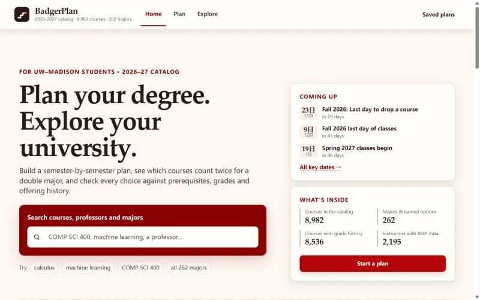

A degree-planning web app for UW–Madison students: build a semester-by-semester plan, see which courses count twice for a double major, and check every choice against prerequisites, grades, and offering history.
Covers the 2026–27 UW–Madison catalog: 8,982 courses and 262 majors and named options, with grade history for 8,536 courses and instructor ratings for 2,195 instructors.
Key Features
- Fills each term with required courses, prerequisites, and Gen Ed, schedules shared courses first, and keeps terms under a credit limit.
- Drag courses between terms; every move is re-checked for prerequisites, usual offering season, and credit load.
- DARS-style requirements check and double-major comparison; plans can be saved, exported, or printed for an advisor.
- Campus map showing where scheduled classes meet, by building and time of day.